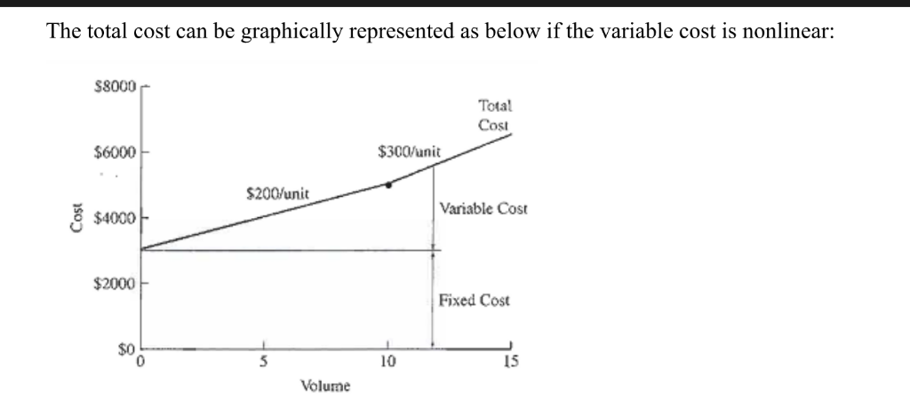
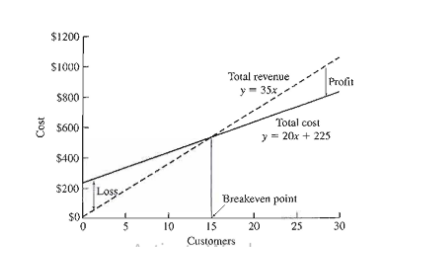
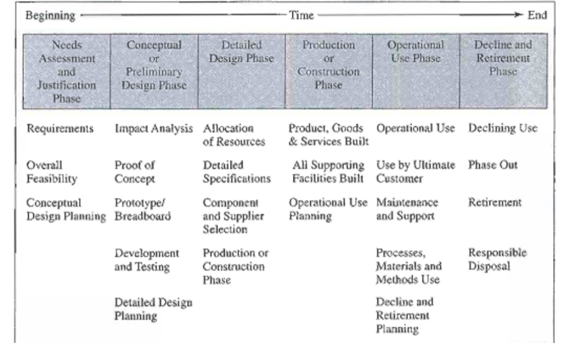

Engineering economic analysis is most suitable if the problem is:
Decision-making is the broad topic because it deals with aspect of everyday human existence. The main focus is to develop the tools to properly analyze and solve the economic problems that are commonly faced by engineers. Even complex situations can be broken down into components to form a sensible solution. The understanding of decision – making process is important because the tools of decision – making is useful for obtaining realistic comparisons between alternatives so that I can make better decision.
Engineering economic analysis focuses on cost, revenues and benefits that occur at different times. Most of the things that engineers design calls for spending money in the design and building stages and after completion revenues or benefits occur – usually for years. Thus the economic analysis of cost, benefits and revenues occurring over time is called engineering economics.
Rational decision making contains nine essential elements. Although the sequence can vary and can be repeated, but all the elements are present in all rational decision. The elements are:
Problem Statement: A concrete aggregate mix is required to contain exactly 31% sand by volume for proper batching. One source of material (Source 1), which contains 25% sand and 75% coarse aggregate, sells for Rs. 270/m³. Another source (Source 2), which contains 40% sand and 60% coarse aggregate, sells for Rs. 396/m³. Determine the least cost per cubic meter of the blended aggregate mixture.
Step-by-Step Mathematical Derivation:
0.25x + 0.40 − 0.40x = 0.31−0.15x = 0.31 − 0.40 = −0.09x = −0.09 / −0.15 = 0.60 (60% by volume from Source 1)1 − x = 1.00 − 0.60 = 0.40 (40% by volume from Source 2)Unit Cost Evaluation:
Blended Cost per m³ = (0.60 m³ × Rs. 270/m³) + (0.40 m³ × Rs. 396/m³) = Rs. 162.00 + Rs. 158.40 = Rs. 320.40 / m³.
Problem Statement: A machine part is manufactured at a unit cost of Rs. 40 for material and Rs. 15 for direct labor. An initial investment of Rs. 500,000 in tooling was required. The total production order requires 3,000,000 pieces (30 lakh pieces). Halfway through the order (1,500,000 pieces remaining), a new method of manufacture can be put into effect that will reduce unit cost to Rs. 34 for material and Rs. 10 for direct labor—but it will require an immediate expenditure of Rs. 100,000 for additional specialized tooling that cannot be reused for future orders. Overhead costs are allocated internally at 2.5 times the direct labor cost. What, if anything, should be done?
Step-by-Step Incremental Analysis:
3,000,000 / 2 = 1,500,000 pieces (15 lakh pieces).Material (Rs. 40) + Labor (Rs. 15) = Rs. 55.00 / piece.Material (Rs. 34) + Labor (Rs. 10) = Rs. 44.00 / piece.Rs. 55.00 − Rs. 44.00 = Rs. 11.00 / piece (Rs. 6 material savings + Rs. 5 labor savings).1,500,000 pieces × Rs. 11.00 = Rs. 1,65,00,000 (Rs. 1.65 Crore).Rs. 1,00,000 (Rs. 1 Lakh).Rs. 1,65,00,000 − Rs. 1,00,000 = +Rs. 1,64,00,000 (Rs. 1.64 Crore Net Profit).Problem Statement: In the design of a cold-storage warehouse, specifications call for a maximum allowable heat transfer rate through the warehouse walls of 30,000 Joules/m²·hr, with a temperature difference ΔT = 30 °C maintained between the inside and outside surfaces. Two insulation materials are considered:
| Insulation Material | Cost per m³ (C_vol) | Thermal Conductivity k (J·m / m²·°C·hr) |
|---|---|---|
| Rock wool | $12.50 / m³ | 140 J·m / m²·°C·hr |
| Foamed insulation | $14.00 / m³ | 110 J·m / m²·°C·hr |
Detailed Comparative Calculations:
(140 × 30) / 30,000 = 4,200 / 30,000 = 0.14 m (14 cm).0.14 m × $12.50 / m³ = $1.75 / m².
(110 × 30) / 30,000 = 3,300 / 30,000 = 0.11 m (11 cm).0.11 m × $14.00 / m³ = $1.54 / m².
Fundamental Heat Conduction Law (Fourier's Conduction Equation):
This part defines fundamental cost concepts. The costs includes fixed and variable costs, marginal and average costs, sunk and opportunity costs, recurring and non-recurring costs, incremental cash cost, book costs and life-cycle costs. It part covers the various types of estimates and difficulties sometimes encountered. The models include unit factor, segmenting, cost indexes, power sizing, triangulation and learning curves. This part discusses estimating benefits and developing cash flow diagrams.
Graphical Decomposition of Engineering Total Cost & Nonlinear Dynamics:

An entrepreneur named Sheetal was considering the money making potential of chartering a bus to take people from his home-town to an event in a larger city. Sheetal planned to provide transportation tickets to the event, and refreshments on the bus for his customers. She gathered data and categorized the predicted expenses as either fixed or variable.
| Item | Fixed Cost (in Rs) | Item | Variable cost(in Rs) |
|---|---|---|---|
| Bus rental | 7200 | Event ticket | 1125/person |
| Gas expense | 6750 | Refreshment | 675/person |
| Other fuels | 1800 | ||
| Bus driver | 4500 |
Step-by-Step Mathematical Derivation for Sheetal's Chartered Trip:
Because passenger tickets cannot be sold in fractional units, Sheetal must book at least 29 full-paying passengers to cover all fixed and variable costs and break even.
x = 29 passengers, Revenue = 29 × Rs. 2,500 = Rs. 72,500, and Total Cost = Rs. 20,250 + (29 × Rs. 1,800) = Rs. 72,450, yielding a net profit of +Rs. 50. Every passenger beyond 28 contributes a net profit of P − V = Rs. 700 / person (the Unit Contribution Margin).
x > 28.93 (i.e. x ≥ 29). Total Revenue exceeds Total Costs (TR > TC).
x < 28.93 (i.e. x ≤ 28). Total Costs exceed Total Revenue (TC > TR).
Graphical Break-Even Architecture & Profit/Loss Horizons:

A distributor of electric pump must decide what to do with a “lot” of old lecetric pumps purchased three years ago. Soon after the distributor purchased the lot, technology advances made the old pumps less desirable to customers. The pumps are becoming more obsolescent as they sit in inventory. The pricing manager has the following information:
| Distributor purchase price 3 years ago | Rs. 6,30,000 |
| Distributor storage cost to date | Rs. 90,000 |
| Distributor’s list price 3 years ago | Rs. 8,55,000 |
| Current list price of the same number of new pumps | Rs. 1,080,000 |
| Amount offered for the old pumps from a buyer 2 years ago | Rs. 4,50,000 |
| Current price the lot of old pumps would bring | Rs. 2,70,000 |
Looking at this, the pricing manager has concluded that the price should be set at Rs. 7,20,000. This is the money that the firm has “tied-up” in the lot of old pumps (6,30,000+90,000), and it was reasoned that the company should at least recover this cost. Furthermore, the pricing manager has argued that an Rs. 720000 price would be Rs. 1,35,000 less than the list price from 3 years ago, and it would be Rs.3,60,000 less than what a lot of new pumps would cost (Rs. 1,080,000 – Rs. 7,20,000). What would be your advice on price?
Philips is choosing between model A (a budget model) and model B (with more features and a higher purchase price). What incremental costs would Philip incur if he chose model B instead of less expensive model A?
| Cost Items | Model A (in $) | Model B (in $) |
|---|---|---|
| Purchase price | 10,000 | 17,500 |
| Installation cost | 3500 | 5000 |
| Annual maintenance cost | 2500 | 750 |
| Annual utility expenses | 1200 | 2000 |
| Disposal cost after useful life | 700 | 500 |
Comprehensive Engineering Life-Cycle Cost & Commitment Matrix:

Context & Conflict: The shipping department foreman discovered an outside commercial printer willing to produce 1,000 copies of announcements for Rs. 2,066, whereas the internal in-house 3-person printing department charges user departments Rs. 2,381 per 1,000 copies. The shipping department requires 30,000 copies per month and decided to outsource all printing. The in-house printing department objected. The General Manager assigned an engineering economist to conduct a comprehensive financial review.
| Cost Category | In-House Internal Charge | Commercial Outside Quote | Net Cash Impact on Entire Enterprise |
|---|---|---|---|
| Direct Labor | Rs. 684 | — | Saved only if staff hours/wages are cut; otherwise fixed corporate cost. |
| Materials & Supplies | Rs. 882 | — | True variable cost: fully saved if printing is outsourced. |
| Allocated Floor Overhead (200 m² @ Rs. 25/m²) | Rs. 815 | — | NOT SAVED: Factory building rent, lighting, heat, and space remain identical. |
| Outside Vendor Invoice Fee | — | Rs. 2,066 | New cash outflow leaving corporate bank accounts. |
| Total Accounted Figures | Rs. 2,381 | Rs. 2,066 | External rate appears cheaper only due to overhead allocation flaw! |
The shipping department foreman made a decision that was locally rational under flawed transfer pricing, but detrimental to the corporation as a whole:
Life cycle costing refers to the concept of designing products, goods and services with a full and explicit recognition of the associated costs over the various phrases of their life cycles. Two key concept in life-cycle costing are that ‘the later design changes are made, the higher the cost’, and that decisions made early in the life cycle tend to “lock in” cost that are incurred later. The downstream product (products created using raw materials from earlier production stages) changes are more costly and upstream changes (focus on raw material, design, foundational development) are easier (and less costly) to make.
When planner try to save money at an early design stage, the result is often a poor design, calling for change orders during construction and prototype development. These changes, in turn, are more costly than working out a better design would have been. The life cycle effects that engineers should consider at the design time include product costs for liability, production, material, testing and quality assurance and maintenance and warranty. Other life-cycle effects include product features based on customer input and product disposal effects on the environment. The engineers should consider all life cycle cost..
Every engineering project involves cash flows distributed across several years. Because the purchasing power of money degrades over time, engineering economic analysis must explicitly account for price changes and inflation to maintain rigorous, unbiased investment comparisons.
Because engineering capital expenditures frequently span 5 to 25 years, even modest annual inflation rates compound into major distortions. A rupee or dollar received in year 10 possesses substantially diminished purchasing capability compared to a base-year dollar.
A price index measures the relative price of a commodity, service, or composite basket relative to an arbitrary base period (normalized to 100).
Scenario A: A bag of cement costs ₹300 in the base year (t=0) and ₹390 five years later (t=5).
Price Index: I₅ = (390 / 300) × 100 = 130 (+30% price rise).
Scenario B: A general construction index climbs from 100 to 150 over 8 years.
Compound Rate: f = (150 / 100)^(1/8) − 1 = (1.50)^0.125 − 1 ≈ 5.199% per year.
Actual Dollars (then-current): The nominal amount changing hands in future period t.
Constant Dollars (real): Currency normalized to base-year purchasing power.
Where: i = nominal market interest rate, i' = real inflation-free rate, f = general inflation rate.
Part 1 (Purchasing Power): With annual inflation f = 6%, constant ₹1,00,000 required in 5 years translates to:
Actual $ = 1,00,000 × (1.06)⁵ = ₹1,33,823.
Part 2 (Fisher Combined Rate): If required real rate i' = 8% and expected inflation f = 5%:
i = 0.08 + 0.05 + (0.08 × 0.05) = 0.13 + 0.004 = 13.40%.
Individual line items (labor, electrical power, refined materials) rarely inflate synchronously. For rigorous economic evaluation, escalate each cash-flow line item with its specific escalation index before aggregating into total annual actual cash flows.
Present Worth (PW) analysis reduces all prospective cash receipts and disbursements to an equivalent single lump sum at time zero (t=0), establishing a direct, objective basis to evaluate mutually exclusive engineering alternatives.
Every analysis must maintain an unwavering perspective:
| Cash Flow Type | Required Discount Rate | Analytical Validity |
|---|---|---|
| Actual Dollars (Then-current) | Nominal Market Rate (i) | Valid: Matches inflated cash flows with market inflation premia. |
| Constant Dollars (Base-year) | Real Rate (i') | Valid: Evaluates pure purchasing power against real productivity return. |
| Actual Dollars | Real Rate (i') | Invalid Error: Under-discounts, grossly overstating project viability. |
| Constant Dollars | Nominal Rate (i) | Invalid Error: Double-discounts for inflation, heavily penalizing viable projects. |
Engineering evaluations must proceed on an after-tax cash flow (ATCF) basis:
Depreciation is non-cash but produces a vital tax shield: Depreciation × t_c.
| Problem Constraint | Governing Economic Criterion |
|---|---|
| Fixed Input: Fixed capital / resources available | Maximize Present Worth of Benefits (PW_B) |
| Fixed Output: Mandated service level / deliverables | Minimize Present Worth of Costs (PW_C) |
| Neither Input nor Output Fixed | Maximize Net Present Worth: NPW = PW_B − PW_C (Subject to NPW ≥ 0) |
A production machine requires initial investment P₀ = ₹5,00,000, returns uniform net savings A = ₹1,50,000 annually for n = 5 years, with MARR i = 10%. Salvage value is negligible (S = 0).
Factor: (P/A, 10%, 5) = [(1.10)⁵ − 1] / [0.10 × (1.10)⁵] = 0.61051 / 0.161051 ≈ 3.79079.
PW = −5,00,000 + 1,50,000 × (3.79079) = −5,00,000 + 5,68,618 = +₹68,618.
Decision: PW > 0; project is economically justified.
Alternatives must be evaluated over identical study periods:
A regional drainage culvert costs initial P₀ = ₹20,00,000 to construct and mandates annual recurring maintenance A = ₹1,00,000 in perpetuity. Nominal discount rate i = 8%.
Perpetual Endowment: A / i = 1,00,000 / 0.08 = ₹12,50,000.
Total Capitalized Cost: CC = 20,00,000 + 12,50,000 = ₹32,50,000.
Every engineering estimate reflects projections into an unresolved future. Unit III establishes quantitative methods to describe, model, and optimize decisions under explicit uncertainty and risk.
Example: Annual savings projected at ₹80,000 (pessimistic), ₹1,10,000 (most-likely), and ₹1,40,000 (optimistic) bounds the present worth distribution before undertaking stochastic modeling.
Probabilities represent outcome likelihoods satisfying Kolmogorov axioms: 0 ≤ P(E_j) ≤ 1 and Σ P(E_j) = 1.0.
If high market demand has P(A) = 0.40 and an independent raw material price hike has P(B) = 0.50, their simultaneous joint occurrence is: 0.40 × 0.50 = 0.20 (20%).
A manufacturing venture forecasts annual return across three states of nature:
Decision trees visually structure multi-stage sequential decisions under uncertainty. Two fundamental nodes govern the topology:
Adjust the branch probabilities and outcome payoffs to watch the dynamic backward-induction rollback re-evaluate optimal policy in real time.
Risk vs. Return: Projects exhibiting wide probability dispersions mandate higher Minimum Attractive Rates of Return (MARR) to compensate investors for capital risk.
Monte Carlo Simulation: When multiple stochastic variables (unit demand, inflation, energy tariffs) interact non-linearly, analysts sample random variates across thousands of simulated project life cycles to generate complete continuous Present Worth probability density curves.
Unlike passive financial models, physical projects offer managerial flexibility to alter decisions over time as uncertainty resolves:
The purchasing power of money at a particular time is designated as the Time Value of Money (TVM). Capital received at a prospective future date inherently possesses lower real present value than an identical nominal sum held today.
Finds the future sum F resulting from initial outlay P after n periods at compounding rate i.
A person deposits initial sum P = ₹20,000 at interest rate i = 18% compounded annually for n = 10 years. Find maturity value F.
F = 20,000 × (1 + 0.18)¹⁰ = 20,000 × (1.18)¹⁰ = 20,000 × 5.2338356 = ₹1,04,676.71.
Finds the present worth P required now to realize future sum F after n periods at discount rate i.
A parent wishes to provide a future education fund F = ₹1,00,000 after n = 10 years. The bank provides i = 15% annual compounding interest. Determine deposit P required today.
P = 1,00,000 × (1 + 0.15)⁻¹⁰ = 1,00,000 × 0.2471847 = ₹24,718.47.
Evaluates future value F accumulated by an annuity series of n equal end-of-period payments A.
A person aged 35 invests A = ₹10,000 at the conclusion of each year for n = 25 years until age 60. Bank returns i = 20% annual compound interest. Find total maturity value.
Factor: (F/A, 20%, 25) = [(1.20)²⁵ − 1] / 0.20 = [95.396216 − 1] / 0.20 = 471.98108.
F = 10,000 × 471.98108 = ₹47,19,810.80.
Determines periodic contribution A required to accumulate predetermined future target F over n periods.
A manufacturing plant requires facility replacement after n = 15 years costing F = ₹5,00,000. Sinking fund yields i = 18% annual compounding. Determine annual deposit A.
Factor: (A/F, 18%, 15) = 0.18 / [(1.18)¹⁵ − 1] = 0.18 / [11.973748 − 1] = 0.01640277.
A = 5,00,000 × 0.01640277 = ₹8,201.39 per year.
Determines lump-sum present worth P equivalent to uniform annuity receipts A across n periods at rate i.
A corporation commits an annual welfare disbursement A = ₹10,00,000 for n = 20 years. Capital reserve fund compounds at i = 15% annually. Find single present deposit P needed now.
Factor: (P/A, 15%, 20) = [(1.15)²⁰ − 1] / [0.15 × (1.15)²⁰] = 15.366537 / 2.4549806 = 6.259331.
P = 10,00,000 × 6.259331 = ₹62,59,331.45.
Computes periodic recovery installment A required to amortize initial loan or capital investment P over n periods.
A bank finances machinery purchase with loan P = ₹10,00,000 at interest i = 18% compounded annually, amortized over n = 15 equal annual installments. Find installment A.
Factor: (A/P, 18%, 15) = [0.18 × (1.18)¹⁵] / [(1.18)¹⁵ − 1] = 2.155275 / 10.973748 = 0.1964028.
A = 10,00,000 × 0.1964028 = ₹1,96,402.77 per year.
When operational costs (e.g. maintenance, repair) increase or decrease by a constant amount G each interest period, the cash flows form an arithmetic gradient series.
A machine maintenance schedule mandates ₹200 at end of year 1, ₹250 at end of year 2, ₹300 at year 3, and ₹350 at year 4. Base payment A₁ = ₹200, constant gradient G = ₹50, n = 4 periods, discount rate i = 10%.
Factor (A/G, 10%, 4) = (1 / 0.10) − [ 4 / ((1.10)⁴ − 1) ] = 10 − [ 4 / 0.4641 ] = 10 − 8.6188 = 1.3812.
Equivalent Uniform Annual Cost: A_total = 200 + (50 × 1.3812) = 200 + 69.06 = ₹269.06 per year.
Present Worth: P_total = A_total × (P/A, 10%, 4) = 269.06 × 3.16987 = ₹852.89.
Debt repayment entails discharging credit obligations through contracted installments consisting of two distinct components:
Enter loan parameters to dynamically generate the complete period-by-period amortization breakdown. 100% rigorous math, zero hardcoding.
A bank advertises a nominal loan rate r = 12% per annum, compounded monthly (m = 12 periods/year).
Period Interest Rate: i_per = 12% / 12 = 1.0% per month.
Effective Annual Rate: i_e = (1 + 0.12 / 12)¹² − 1 = (1.01)¹² − 1 = 1.126825 − 1 = 12.6825% p.a.
Rigorous, curriculum-aligned model answers derived directly from the analytical frameworks established across Modules 1 and 2. Click Show Model Solution on each card to expand complete step-by-step reasoning, mathematical formulations, and interactive calculation widgets.
Question: State any four elements of the rational decision-making process.
Any four of the nine foundational steps detailed in Section 2: Rational Decision-Making:
(Alternative valid elements: Select Criteria, Construct Model, Predict Outcomes, Choose Best Alternative, Audit Results).
Question: Explain the difference between fixed cost and variable cost, with one example of each.
Question: Explain why sunk cost is disregarded in engineering economic analysis.
Definition: A sunk cost is an expenditure that has already occurred in the past as the outcome of a prior decision and cannot be altered, recovered, or undone by any present or future choice.
Analytical Rationale:
Problem: Total cost of producing 55 units is Rs. 2,200 and of producing 56 units is Rs. 2,250. Calculate the marginal cost of the 56th unit and the average cost at 56 units.
1. Marginal Cost of the 56th unit:
MC₅₆ = (2,250 − 2,200) / (56 − 55) = 50 / 1 = Rs. 50.00.
2. Average Cost at 56 units:
AC₅₆ = 2,250 / 56 ≈ Rs. 40.18 per unit (exactly 40.17857 Rs./unit).
Economic Insight: Because MC₅₆ (Rs. 50) exceeds previous average cost AC₅₅ (2,200 / 55 = Rs. 40), producing the 56th unit exerts upward pressure on average cost.
Question: Explain the learning curve and why it matters in short production runs.
Definition: The learning curve models the empirical phenomenon whereby input labor hours and unit costs decline at a predictable geometric rate each time cumulative production volume doubles:
Why It Matters in Short Production Runs:
Problem: A distributor bought a lot of electric pumps three years ago for Rs. 6,30,000 and has spent Rs. 90,000 on storage so far. The pumps are now obsolete, and the lot would fetch only Rs. 2,70,000 today. The pricing manager wants to price the lot at Rs. 7,20,000 to recover the money tied up. Evaluate this reasoning using sunk cost and opportunity cost, and advise on the price.
1. Evaluation of Pricing Manager's Reasoning:
2. Professional Advice on Price:
Accept the prevailing market offer of Rs. 2,70,000 (or best competitive bid near it) immediately. Liquidating now stems continuous storage overhead leakage and frees up Rs. 2,70,000 of productive working capital.
Question: State any four categories of cash flow in an engineering project.
(Additional valid categories: Overhauls/Major Replacements, Corporate Income Taxes & Depreciation Tax Shields).
Question: Define the Internal Rate of Return (IRR) and state the condition under which a project is accepted.
Definition: The Internal Rate of Return (IRR or i*) is the break-even discount rate that equates the present worth of cash inflows (benefits) to the present worth of cash outflows (costs), reducing the Net Present Worth (NPW) of the project to exactly zero:
Project Acceptance Criterion:
Question: Explain what is meant by equivalence of cash flows.
Concept of Economic Equivalence:
Problem: A firm has fixed costs of Rs. 3,60,000, a selling price of Rs. 150 per unit, and a variable cost of Rs. 90 per unit. Calculate the break-even quantity.
Step-by-Step Solution:
Verification:
Total Revenue = 6,000 × Rs. 150 = Rs. 9,00,000.
Total Cost = Rs. 3,60,000 + (6,000 × Rs. 90) = Rs. 3,60,000 + Rs. 5,40,000 = Rs. 9,00,000.
Net Profit = Total Revenue − Total Cost = Rs. 0 (Exact Break-Even Point Verified).
Question: Explain any two drawbacks of benefit–cost analysis for public goods.
(Alternative valid drawback: Disregard for Income Distribution & Equity—B/C aggregates total monetary surplus irrespective of whether low-income citizens bear the disruption costs while affluent commuters reap the time savings).
Problem: A state government plans to build a bridge across a river so that vehicle users no longer take a long detour, saving travel time and fuel.
(a) Explain how the benefit–cost ratio would be used to decide whether the project is justified.
(b) Evaluate the limitations of relying on the benefit–cost ratio alone for this public project.
(a) Use of Benefit–Cost (B/C) Ratio for Justification:
(b) Limitations of Relying on B/C Ratio Alone:
Module 2 establishes the quantitative framework for visualizing, evaluating, and comparing engineering capital investments over time. By translating physical engineering designs into standardized cash flow schedules, engineers apply rigorous rate of return and benefit-cost criteria to select optimal, economically justified projects.
Standard Drawing Conventions:
t = 0).t = 0 to procure land, construct civil facilities, purchase machinery, and commission operational plant systems.t = 0 or Future sum F at t = n).G = ₹50).Economic equivalence does not mean nominal monetary parity; it signifies that an investor is completely indifferent between receiving sum A today or receiving equivalent sum B in the future at that rate of interest.
Consider an initial principal sum P = ₹300 held at time zero. Evaluate its economic equivalence 7 years hence under two alternative interest rates:
P × (1 + i)^n = 300 × (1 + 0.15)⁷ = 300 × (1.15)⁷ = 300 × 2.66002 = ₹798.01.P × (1 + i)^n = 300 × (1 + 0.10)⁷ = 300 × (1.10)⁷ = 300 × 1.948717 = ₹584.62.Scenario: An enterprise invests initial capital P₀ = ₹10,000 today (t = 0), and receives positive returns of CF₁ = ₹7,000 at the end of Year 1 and CF₂ = ₹8,000 at the end of Year 2. Determine the project's Internal Rate of Return (IRR).
Trial-and-Error Interpolation Process:
i = 31.06%, NPW = 0.00. Therefore, IRR ≈ 31.06%. If MARR is 15%, the project is overwhelmingly acceptable.
e = MARR until the end of the project life (year n).
Scenario: An initial investment of P = ₹10,000 produces cash inflows of ₹6,000 at year 1 and ₹8,000 at year 2. Reinvestment rate e = MARR = 10%.
FV = [6,000 × (1 + 0.10)¹] + 8,000 = 6,600 + 8,000 = ₹14,600.10,000 × (1 + ERR)² = 14,600.(1 + ERR)² = 14,600 / 10,000 = 1.46 &implies; 1 + ERR = (1.46)^0.5 = 1.2083.ERR = 1.2083 − 1 = 0.2083 = 20.83% per annum.Annual Cash Flow converts all capital and operating disbursements into an Equivalent Uniform Annual Series over the project lifecycle:
| Decision Condition | Governing Economic Criterion |
|---|---|
| Fixed Input: Capital budget is fixed | Maximize Equivalent Uniform Annual Benefit (Maximize EUAB) |
| Fixed Output: Mandatory production requirement | Minimize Equivalent Uniform Annual Cost (Minimize EUAC) |
| Neither Input nor Output Fixed | Maximize Net Annual Worth: Maximize (EUAB − EUAC) |
The Mandatory 5-Step Incremental Analysis Algorithm:
IRR < MARR.ΔCF_t = CF_{t, Challenger} − CF_{t, Defender}.NPW(ΔIRR) = 0:
ΔIRR ≥ MARR: The additional capital investment is justified. The Challenger wins and becomes the new Defender!ΔIRR < MARR: The additional capital is not justified. The Challenger is eliminated, and the current Defender is retained.Future Worth evaluates investments at the conclusion of study period n:
Example: Investing ₹10,000 at 10% interest for 3 years yields FW = 10,000 × (1.10)³ = ₹13,310 (a total future wealth gain of ₹3,310 over initial capital).
Project Data: A municipal transportation agency proposes constructing a new bridge spanning a river. Initial construction cost is P₀ = ₹40,00,000. Annual maintenance cost is ₹1,50,000 per year over an assumed life of n = 15 years. Public benefits (commuter fuel savings and travel-time reductions) are estimated at ₹8,49,000 per year. Discount rate i = 12%.
1. Present Worth of Agency Costs (PW_C):
Factor: (P/A, 12%, 15) = [(1.12)¹⁵ − 1] / [0.12 × (1.12)¹⁵] = 4.47357 / 0.656828 ≈ 6.81086.
PW_C = 40,00,000 + [1,50,000 × 6.81086] = 40,00,000 + 10,21,629 = ₹50,21,629.
2. Present Worth of Public Benefits (PW_B):
PW_B = 8,49,000 × (P/A, 12%, 15) = 8,49,000 × 6.81086 = ₹57,82,420.
3. Benefit-Cost Ratio Evaluation:
B/C = PW_B / PW_C = 57,82,420 / 50,21,629 = 1.1515.
B/C = 1.15 > 1.0, the public bridge project is economically justified and should be approved.
Sensitivity Analysis: Systematically varying one input parameter at a time (selling price, production volume, operating cost, discount rate, equipment life, salvage value) by ±10% or ±20% while holding other variables constant, to observe the sensitivity of Net Present Worth (NPW) or IRR.
Break-Even Analysis: Solving for the exact level of activity at which net profit equals zero (Total Revenue = Total Cost).
Module 5 covers the economic dynamics of capital asset depreciation, taxation shields, and replacement decision-making. Engineers must accurately account for asset wear, technological obsolescence, and income tax allowances to determine the exact optimal timing for replacing existing plant machinery.
Core Accounting Characteristics:
| Asset Category | Examples | Depreciation Eligibility & Economic Rationale |
|---|---|---|
| Depreciable Assets | Manufacturing machinery, industrial buildings, corporate vehicles, computer hardware, tooling, patents (amortized). | Fully Depreciable: Must have a determinable useful life exceeding 1 year, and must wear out, decay, get consumed, or become obsolete over time. |
| Non-Depreciable Assets | Raw land, unimproved real estate parcels, inventory held for retail sale, raw material stocks. | Non-Depreciable: Land possesses an indefinite economic lifespan and does not physically deteriorate. Inventory is expensed directly through Cost of Goods Sold (COGS). |
Because corporate income taxes are calculated on net taxable income after deducting allowable depreciation, depreciation creates a vital cash-preserving tax shield:
d = ₹50,000 in a corporate tax bracket of t_c = 30% delivers an immediate cash tax savings of 50,000 × 0.30 = ₹15,000 that stays inside the company.
Allocates an equal, uniform depreciation charge to each year of the asset's economic life:
Machine Cost Basis B = ₹1,00,000, Estimated Salvage Value SV = ₹10,00,0, Depreciable Life N = 5 years.
Annual Depreciation: d = (1,00,000 − 10,000) / 5 = 90,000 / 5 = ₹18,000 per year.
| Year (t) | Depreciation Charge (d_t) | Remaining Book Value (BV_t) |
|---|---|---|
| 0 (Acquisition) | — | ₹1,00,000 |
| 1 | ₹18,000 | ₹82,000 |
| 2 | ₹18,000 | ₹64,000 |
| 3 | ₹18,000 | ₹46,000 |
| 4 | ₹18,000 | ₹28,000 |
| 5 (Terminal) | ₹18,000 | ₹10,000 (= Salvage Value SV) |
An accelerated depreciation method applying a constant percentage rate R to the beginning-of-year remaining book value:
Machine Cost Basis B = ₹1,00,000, Salvage Value Floor SV = ₹10,000, Life N = 5 years. Rate R = 2 / 5 = 0.40 (40%).
| Year (t) | Beginning Book Value (BV_{t-1}) | Depreciation Charge (d_t = 40% × BV) | Ending Book Value (BV_t) |
|---|---|---|---|
| 1 | ₹1,00,000 | 0.40 × 1,00,000 = ₹40,000 | ₹60,000 |
| 2 | ₹60,000 | 0.40 × 60,000 = ₹24,000 | ₹36,000 |
| 3 | ₹36,000 | 0.40 × 36,000 = ₹14,400 | ₹21,600 |
| 4 | ₹21,600 | 0.40 × 21,600 = ₹8,640 | ₹12,960 |
| 5 | ₹12,960 | Standard 40% would give ₹5,184, driving BV to ₹7,776 (violating SV floor ₹10,000!). Adjusted d₅: 12,960 − 10,000 = ₹2,960 | ₹10,000 (= SV Floor) |
Primary Drivers for Asset Replacement:
The U-Shaped EUAC Curve: As an asset ages, its annualized capital recovery cost declines, but its annual operating, repair, and downtime costs climb. Summing these two opposing curves creates a distinct U-shape. The Minimum Cost Life (Economic Service Life) occurs at the lowest point of the EUAC curve, precisely where the next-year Marginal Cost (MC) crosses the EUAC curve.
Challenger Data (Purchase Price P = ₹20,000, i = 10%):
| Year of Life (N) | Marginal Cost for Year (MC_t) | Equivalent Uniform Annual Cost (EUAC) |
|---|---|---|
| 1 | ₹11,000 | ₹11,000 |
| 2 | ₹9,400 | ₹10,238 |
| 3 (Minimum Cost Life) | ₹9,500 | ₹10,015 (Minimum EUAC) |
| 4 | ₹10,700 | ₹10,163 |
| 5 | ₹12,450 | ₹10,537 |
The Challenger's economic service life is 3 years with a minimum annualized cost EUAC* = ₹10,015 per year.
Defender Evaluation:
Current realizable market value: MV₀ = ₹8,000.
Projected market value in 1 year: MV₁ = ₹6,000.
Next year's projected operating & maintenance cost: O&M₁ = ₹6,500.
Cost of capital: i = 10%.
Engineering decisions do not exist in a vacuum; they must be funded, tracked, and audited through a firm's accounting architecture. This module bridges engineering analysis with financial reporting, examining the Balance Sheet, the Income Statement, financial health metrics, Capital Expenditure (CapEx) vs. Operating Expenditure (OpEx), and modern Activity-Based Costing (ABC) systems designed to eliminate traditional overhead distortion.
The Balance Sheet represents a financial snapshot of a firm's cumulative health at a single point in time (e.g., March 31 or December 31). It is founded on the timeless dual-aspect accounting equation:
| Assets (What the Firm Owns & Controls) | Liabilities & Equity (How Assets Were Financed) |
|---|---|
|
1. Current Assets (Liquid within 1 Operating Year): • Cash & Cash Equivalents • Marketable Short-Term Securities • Accounts Receivable (Invoices billed to clients awaiting collection) • Inventories (Raw materials, Work-in-Progress / WIP, Finished Goods) • Prepaid Expenses (Advance rent, prepaid insurance) 2. Non-Current (Fixed / Tangible) Assets: • Land (Historical cost; never depreciated) • Buildings & Factory Structures (Gross cost minus Accumulated Depreciation) • Machinery, Industrial Tooling, Robotics, Fleets 3. Intangible Assets: • Patents, Trademarks, Software Licenses, Proprietary Algorithms, Goodwill |
1. Current Liabilities (Due within 1 Operating Year): • Accounts Payable (Invoices owed to material suppliers) • Short-Term Commercial Notes & Working Capital Bank Loans • Accrued Liabilities (Wages payable, accrued interest, statutory taxes) 2. Long-Term Liabilities (Obligations > 1 Year): • Corporate Debentures & Term Bonds Payable • Long-Term Equipment Loans & Mortgages 3. Owner's Equity (Shareholders' Funds): • Contributed Capital (Common Stock & Paid-in Surplus) • Retained Earnings (Cumulative historical profits reinvested into business operations rather than distributed as dividends) |
Engineering Takeaway: A project or factory can be fundamentally profitable on paper but experience catastrophic bankruptcy if its Net Working Capital turns negative, leaving it unable to honor payroll or raw material vendor invoices.
While the Balance Sheet records a static snapshot of assets and liabilities, the Income Statement measures economic performance over a specified duration (quarterly or annually). It tracks the progressive subtraction of expenses from top-line revenue to derive bottom-line profit:
| Dimension | Capital Expenditure (CapEx) | Operational Expenditure (OpEx) |
|---|---|---|
| Definition | Funds expended to acquire, upgrade, or extend the productive life of physical, long-term capital assets (> 1 year life). | Day-to-day expenditures required to sustain ongoing factory operations and business processes (≤ 1 year benefit). |
| Engineering Examples | Purchase of 5-axis CNC milling centers, building a cleanroom, industrial robotics cell, factory expansion. | Electricity bills, machine lubricants, cutting fluid, technician wages, maintenance repairs, cloud API subscriptions. |
| Cash Flow Timing | Lump-sum upfront cash outflow at Project Year 0. | Continuous, recurring periodic cash disbursements across operating cycles. |
| Accounting Treatment | Capitalized onto the Balance Sheet as a Fixed Asset; not expensed immediately. | Expensed immediately in the current period on the Income Statement against current revenue. |
| Tax Deduction | Depreciated over asset recovery life (N years) via periodic Depreciation Tax Shields (d_t × t_c). | 100% tax-deductible against taxable income in the exact year incurred. |
Every industrial production line incurs direct costs (easily traced to an individual workpiece) and indirect overhead costs (rent, factory heating, plant supervision, tooling maintenance, material handlers). Cost allocation is the method by which overhead is distributed to end products.
POHR = Total Estimated Factory Overhead (₹) / Total Estimated Allocation Base (DLH or MH)Activity Rate = Total Cost in Activity Pool / Total Quantity of Cost DriverApplied Overhead = Σ [ Activity Rate_j × Driver Units Consumed by Product_j ]
Factory Scenario: Precision Dynamics Ltd. produces two components: Product S (Standard Gear, high volume) and Product C (Custom Drone Gearbox, low volume). Total annual factory overhead is ₹12,00,000.
| Parameter | Product S (Standard) | Product C (Custom) | Factory Total |
|---|---|---|---|
| Annual Production Volume | 10,000 units | 1,000 units | 11,000 units |
| Direct Material Cost per unit | ₹100 | ₹250 | - |
| Direct Labor Cost per unit | ₹50 | ₹150 | - |
| Machine Hours per unit | 2.0 hours | 4.0 hours | 24,000 hours (20,000 + 4,000) |
| Production Batch Runs / Setups | 10 setups | 40 setups | 50 setups total |
| Quality Assurance (QA) Inspection Hours | 100 hours | 400 hours | 500 hours total |
Activity Overhead Breakdown:
• Activity Pool 1: Machine Maintenance & Power = ₹6,00,000 (Cost driver: 24,000 Machine Hours)
• Activity Pool 2: Tooling Setup & Calibration = ₹3,50,000 (Cost driver: 50 Setups)
• Activity Pool 3: Quality Control & Metrology = ₹2,50,000 (Cost driver: 500 Inspection Hours)
Total Overhead = ₹6,00,000 + ₹3,50,000 + ₹2,50,000 = ₹12,00,000.
Method A: Traditional Overhead Allocation (Based on Machine Hours):
POHR = Total Overhead / Total Machine Hours = ₹12,00,000 / 24,000 MH = ₹50.00 per machine hour.
Method B: Activity-Based Costing (ABC) Allocation:
Overhead Assigned to Product S (10,000 units):
• Machine: 20,000 MH × ₹25 = ₹5,00,000
• Setups: 10 setups × ₹7,000 = ₹70,000
• Inspection: 100 hrs × ₹500 = ₹50,000
Total Overhead S = ₹6,20,000 &implies; Overhead per Unit S = ₹6,20,000 / 10,000 = ₹62.00 per unit.
ABC Total Unit Cost S = ₹100 + ₹50 + ₹62.00 = ₹212.00 per unit.
Overhead Assigned to Product C (1,000 units):
• Machine: 4,000 MH × ₹25 = ₹1,00,000
• Setups: 40 setups × ₹7,000 = ₹2,80,000
• Inspection: 400 hrs × ₹500 = ₹2,00,000
Total Overhead C = ₹5,80,000 &implies; Overhead per Unit C = ₹5,80,000 / 1,000 = ₹580.00 per unit.
ABC Total Unit Cost C = ₹250 + ₹150 + ₹580.00 = ₹980.00 per unit.
An exhaustive, mathematically rigorous formula cheat sheet covering all engineering economic principles, compound interest factors, inflation adjustments, depreciation schedules, replacement models, and accounting equations. All symbols, units, and criteria are fully defined.
| Decision Environment | Analytical Method | Optimal Economic Criterion |
|---|---|---|
| Fixed Capital Input | Present Worth / Annual Worth | Maximize Benefits: Maximize PW(Benefits) or Maximize EUAB |
| Fixed Required Output | Present Worth / Annual Worth | Minimize Costs: Minimize PW(Costs) or Minimize EUAC |
| Neither Input nor Output Fixed | Net Present Worth (NPW) | Maximize Net Worth: Maximize NPW = PW(Benefits) − PW(Costs) ≥ 0 |
| Single Independent Project | Internal Rate of Return (IRR) | Accept if IRR ≥ MARR; Reject if IRR < MARR |
| Mutually Exclusive Projects | Incremental ROR (ΔIRR) | Accept Higher-Cost Challenger if ΔIRR ≥ MARR |
| Public Works Project | Benefit-Cost Ratio (B/C) | Accept if B/C = PW(Benefits) / PW(Costs) ≥ 1.0 |
| Perpetual Project (n &implies; ∞) | Capitalized Cost (CC) | Minimize Capitalized Cost: Minimize CC = P₀ + (A / i) |
| Equipment Replacement | Marginal Cost vs. EUAC | Replace when Defender MC > Challenger Minimum EUAC* |
The decision-making process began with this recognition of a problem. Many firms establish programs for total quality management (TQM) or continuous improvement (CI) that are designed to identify problems, so that they can be solved.
The goal or the objective can be grand or overall goal. The presence of multiple, conflicting goals is often the foundation of complex problems. But the objective can be narrow and specific. Thus, defining the objective is the act of exactly describing the task or goal.
One must first assemble good information to make a good decision. There is vast quantity of information that is not written down anywhere but is stored in individual’s memory from knowledge and experience. Some data are available at little or no cost and other data are gathered by consulting people having specific knowledge. Some data are of high – quality (precise and accurate) while, other rely on individual judgement for an estimate. In engineering decision – making, an important source of data is a firm’s own accounting system. Accounting data focuses on past information, and engineering judgement must be applied to estimate current and future values. Financial and cost accounting are designed to show accounting values and the flow of money – specifically costs and benefits in a company’s operations. Where the cost are directly related to specific operation is called direct cost and there is no difficulty but, if the cost are not directly related to a specific operation then it is indirect cost or overhead which are usually allocated to a company’s operations and products by some arbitrary method. Gathering cost data presents difficulties. One way to look at the financial consequences – cost and benefits – of various alternatives is as follows:
To create a meaningful economic analysis, the true differences between alternatives must be determined, which might require some adjustment of cost accounting data.
The cost-accounting records of a large company show the average monthly costs for a three person printing department. The wages of the department members and benefits, such as vacation and sick-leave make up the first category of direct labor. The company’s indirect or overhead cost – such as heat, electricity and employee insurance – must be distributed to its various departments in some manner and, like many other firms this one uses floor space as the basis for its allocation:
| Type of cost | Cost |
|---|---|
| Direct labor (including employee benefit) | Rs. 5,40,000 |
| Materials and supplies consumed | Rs. 6,30,000 |
| Allocated overhead cost (200 m² of floor area at Rs. 25/m²) | Rs. 4,50,000 |
| Total Cost | Rs. 1,620,000 |
The printing department charges the other departments for its services to recover its Rs. 18,000 monthly cost. For example, the charge to run 1000 copies of an announcement is:
| Type of cost | Cost |
|---|---|
| Direct labor (including employee benefit) | Rs. 684 |
| Materials and supplies consumed | Rs. 882 |
| Allocated overhead cost (200 m² of floor area at Rs. 25/m²) | Rs. 815 |
| Total Cost | Rs. 2,381 |
The shipping department checks with a commercial printer which would print the same 1000 copies for Rs. 2,066. Although the shipping department needs only about 30,000 copies printed a month, its foreman decides to stop using the printing department and have the work done by the outside printer. The in-house department object to this. As a result, the general manager gave the responsibility to you to study the situation and recommend what should be done.
Unless the best alternative is considered the result will always be sub-optimal. Two types of alternatives are sometimes ignored. First, a do-nothing alternative and second, a feasible but unglamorous alternative (patch a cloth or keep the motor running manually for another year before replacing it). Sometimes a group of people considering alternatives in an innovative atmosphere (brainstorming) can be helpful. The payoff from a new, innovative alternative can far exceed the value of carefully selecting between the existing alternative. Any good listing of alternatives will produce both practical and impractical alternatives, but only the feasible alternatives are retained for further analysis.
Logically choose the best alternative (what does best mean?). There must be a criterion, or a set of criteria, to judge the alternatives. The term ‘best’ is a relative adjective, rather than absolute values, this means the selection will be the alternative that is relatively most desirable. Several criteria based on which the ‘best alternative’ can be selected:
Selecting criterion for choosing the best alternative is not easy, it is different for different groups. The disagreement between management and labor is collective bargaining (concerning wages and employment conditions) reflects disagreement over the objective and the criterion for selecting the best alternative.
The last – criterion: Maximize profit is normally selected in engineering decision – making. When this criterion is used, all problems falls into one of three categories:
At some point in decision making, various elements must be bought together. The objective, relevant data, feasible alternatives and selection criterion must be merged. Constructing the relationship between the decision – making elements is frequently called model-building or constructing the model. To an engineer, modelling may be a scaled physical representation of the real thing or system or mathematical equation or asset of equations, describing the desired inter-relationships. In laboratory there may be a physical model, but in economic decision making, the model is usually mathematical.
The model and the data are used to predict the outcomes for each feasible alternatives. To choose the best alternative, the outcomes for each alternative must be stated in a comparable way. Usually the consequences of each alternative are stated in terms of money, that is, in form of cost and benefits. The resolution of consequences is done with all monetary and non-monetary consequences which includes market, extra market and intangible consequences.
The most common error in long-term problems is assuming that the situation will not change for the do-nothing alternative. Example: Current profit will shrink or vanish as a result of actions of competitors and the expectation of the customers; traffic congestion increases over the years as the number of vehicles increases – doing nothing does not imply that situation will not change.
Choosing the best alternative is determining the alternative which best meets the selection criterion. Since, the intangible consequences are left out of the numerical calculations, they should be introduced to the decision – making process at this point. During the decision – making process certain feasible alternatives are eliminated because they are dominated by others – better alternatives. Example: Walking to your campus which is 10 km away from your house is a feasible alternative, but it is dominated by the better alternative of taking a bus.
After examining the structure of decision – making process, it is appropriate to ask, when is a decision made and who makes it? If one person performs all the steps in decision – making, then the person is the decision – maker. The selection of the feasible alternatives may be the key item, the rest of the analysis is a methodical process leading to the inevitable decision. The decision may be drastically affected, or even pre-determined, by the way in which the decision-making process is performed.
Liz, a young engineer, was assigned to make an analysis of additional equipment needed for the machine shop. The single criterion for selection should be economical, considering both initial costs and future operating costs. Investigation revealed three practical alternatives:
The preliminary analysis indicated that 3rd is most economical but Liz did not like the idea, so she choose between two and showed that general purpose drilling machine is most economical. The manager assumed that the two alternatives presented were the best of all feasible alternatives, and he approves Liz’s recommendation. Who is the decision – maker?
Audit compares the results with the predictions. Do the results of a decision analysis reasonably agree with its projections? If a new machine tool was purchased to save labour and improve quality, did it? The audit may help ensure that projected operating advantages are ultimately obtained.